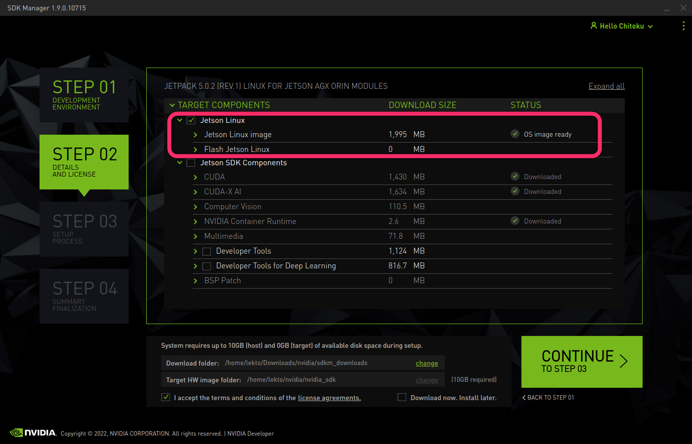
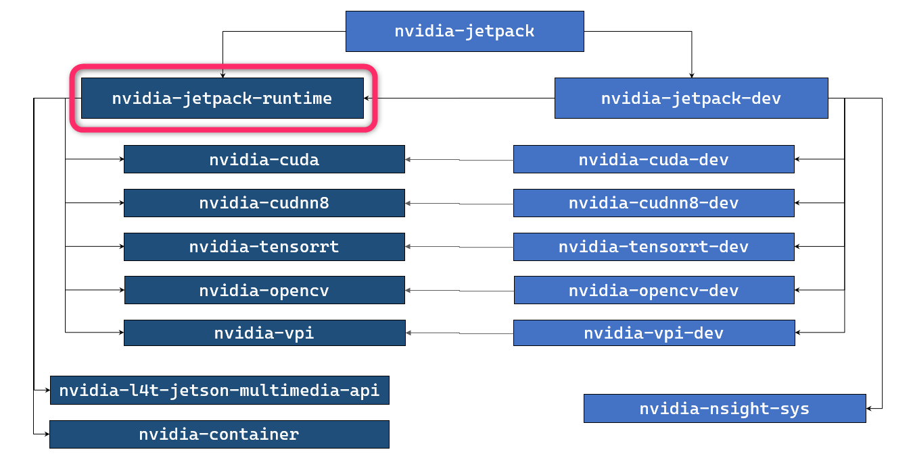

"JetPack Runtime" configuration for JetPack 5.0.2 (and above)
If you are on JetPack 5.0.2 and above, and if you prefer to run your application(s) natively on Jetson (without using Docker containers), you can install all runtime-oriented JetPack component packages to foam "JetPack Runtime" configuration.
sudo apt install nvidia-jetpack-runtime
Disk space used for JetPack Runtime configuration
| JetPack 5.0.2 (Rel 35.1.0) Jetson AGX Orin Developer Kit |
JetPack 5.0.2 (Rel 35.1.0) Jetson AGX Xavier Developer Kit |
JetPack 5.0.2 (Rel 35.1.0) Jetson Xavier NX Developer Kit |
|
|---|---|---|---|
| Base L4T | 5.6 GB | nnn GB | 5.6 GB |
| JetPack Runtime | 9.7 GB | nnn GB | 9.7 GB |
| JetPack Full | 16.6 GB | nnn GB | nnn GB |
Step 1. Flash L4T
Flash your Jetson with just the regular L4T (Linux for Tegra).
Follow the Quick Start page of Jetson Linux Developer Guide (r35.1).
mkdir L4T_r35.1
cd L4T_r35.1
wget https://developer.nvidia.com/embedded/l4t/r35_release_v1.0/release/jetson_linux_r35.1.0_aarch64.tbz2
wget https://developer.nvidia.com/embedded/l4t/r35_release_v1.0/release/tegra_linux_sample-root-filesystem_r35.1.0_aarch64.tbz2
L4T_RELEASE_PACKAGE=jetson_linux_r35.1.0_aarch64.tbz2
SAMPLE_FS_PACKAGE=tegra_linux_sample-root-filesystem_r35.1.0_aarch64.tbz2
tar xf ${L4T_RELEASE_PACKAGE}
cd Linux_for_Tegra/rootfs/
sudo tar xpf ../../${SAMPLE_FS_PACKAGE}
cd ..
sudo ./apply_binaries.sh
Put your Jetson into Force Recovery mode, and issue the following.
BOARD=jetson-agx-orin-devkit
sudo ./flash.sh ${BOARD} mmcblk0p1
You can use prepare_l4t_dir.sh script to automate the preparation of Linux_for_Tegra directory.
git clone https://github.com/NVIDIA-AI-IOT/jetson-min-disk
cd jetson-min-disk
BOARD=jetson-agx-orin-devkit
./scripts/prepare_l4t_dir.sh -b ${BOARD} -v r35.1.0
cd $(cat LAST_L4T_DIR)
sudo ./flash.sh ${BOARD} mmcblk0p1
- Launch SDK Manager on your host Ubuntu PC
- On "Step 01", de-select Host Machine, select your Target Hardware, select "JetPack 5.0.2 (rev.1) or JetPack 5.0.2 Runtime (rev.1)" for TARGET OPERATING SYSTEM
- On "Step 02", select "Jetson Linux" and de-select "Jetson SDK Components". 
- On "Step 03", flashing dialog pops up. Select items accordingly and hit Flash button.
Step 2. Install nvidia-jetpack-runtime
After flashing is done, boot your Jetson, complete the initial setup (OEM-config) flow if necessary.
Once ready, with Internet connection secured, execute the following.
sudo apt update
sudo apt install nvidia-jetpack-runtime
Done - Verification
You can copy your applications onto this Jetson to see if it functions as expected.
This will validate your Jetson as the deployment platform.
Specific runtimes for your application
Of course, if you know the exact runtimes your applications require, you can choose to install those specific runtimes, rather than installing all the runtimes by specifying nvidia-jetpack-runtime.
